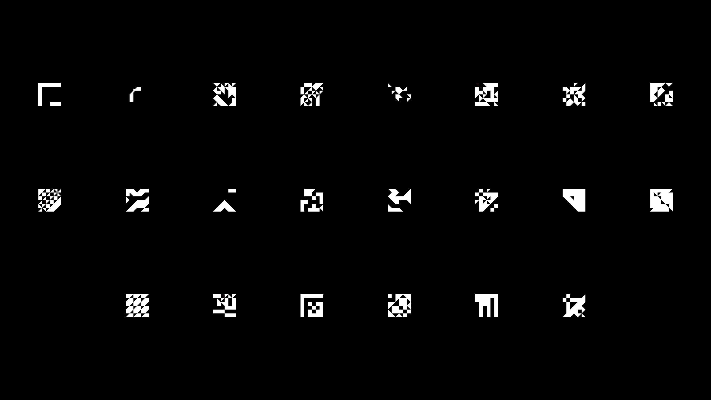
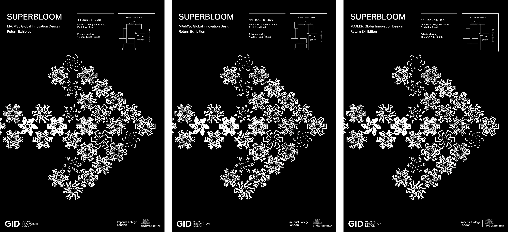
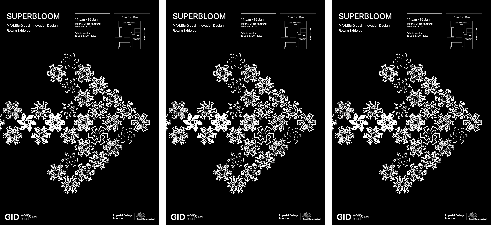

"Superbloom" is the return exhibition of the 2024 MA/MSc Global Innovation Design cohort following the completion of two terms abroad across Tokyo, New York, Beijing, and Singapore.
(Each member of the GID cohort was invited to design their own tile, which was mirrored and duplicated to create individual blooms.)

 



A superbloom is a rare desert phenomenon where an unusually high proportion of wildflowers whose seeds have lain dormant in desert soil blossom at the same time. The "Superbloom" exhibition is a celebration of the return of the 2024 MA/MSc Global Innovation Design cohort, following their completion of 2 semesters abroad in Tokyo, New York, Beijing, and Singapore. The exhibition was on display at Imperial College London from January 11-16 and showed how their experiences have shaped their design process and practice, exhibiting artefacts and digital explorations that have blossomed into reality.
In this project, I designed the theme and visual branding - creating graphics and visual language for digital marketing materials, posters, media screen, and social media.
→ Fall 2023 (4 Weeks)
→ Special thanks to Samantha Clarke, Abigail Hoover, Tarika Kumar, & Charlotte Slingsby!